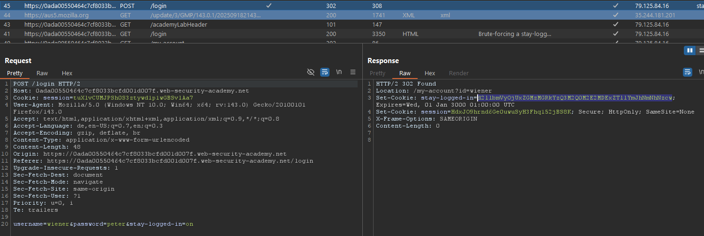

3. Other Authentication
Andere Authentication Mechanismen¶
Es gibt noch weitere Mechansimen die gut abgesichert werden müssen. - Remember Me - Reset Password
Remember me¶
Oft werden diese einfach mit einem Cookie-Token vergeben -> Gefährlich kann das werden wenn dieser nicht gut gesichert implementiert wird. Manchmal wird einfach nur ein Token aus Username und Passwort erstellt und encrypted.
Lab: Brute-forcing a stay-logged-in cookie¶
- Wir melden uns mit unserem Account an und checken das Verhalten der Webseite und sehen es wird beim Login ein Encrypted Logged-In Token übergeben. 
- Nach genauerem hinsehen und decrypten haben wir festgestellt, es sind einfach nur
Username:Passwordals encrypted - Hab dann an Turbo Intruder Extension geschickt und ein BF Script laufen lassen welches den Cookie bruteforced anhand von folgendem Muster base64(Username:MD5(Passwort)) (Username und Passwortliste waren ja gegeben)
- Ergebnis bei Treffer. Danach kann man Seite an Browser senden und laden lassen
{kind=link}
{kind=link}
{kind=link}
Lab: Offline password cracking¶
- Wieder abchecken wie die Seite funktioniert.
- XSS möglich in Comment-Section bei Posts, Stayed-Login(No Random Hash - Base64(Username:MD5(Passwort)))
- Danach ein Exploit in der Comment-Section bei einem Blog-Post eingeschleust welcher den stayed-login-cookie an mich sendet. - Nutzer ruft unseren Server mit angehängten Cookies auf
- In den Logs sehen wir nun die angehängten Cookies
- Mit Decoder in Burp-Suit und Crackstation können wir den encrypteten Hash wieder decrypten
Resetting Password¶
In der Praxis vergessen Nutzer oft ihre Passwörter daher ist es wichtig eine Methode einzubauen die eben ein solches zurücksetzen des Passworts möglich machen - Wichtiger ist es das auch entsprechend sicher zu machen
Passwörter über E-Mail¶
Anfällig für Man in the Middle angriffe
Passwörter als URL¶
Anfällig bei den temporären Token -> Wichtig diese gegenzuchecken sonst kann man einfach seinen eigenen POST Request zusammenstellen und das Passwort eines Users ändern nur mit dem Usernamen.
Lab: Password reset broken logic¶
- Testweise Passwort zurücksetzen mit eigenem Konto um zu schauen wie die Seite das handhabt
- Stellen fest bei
POST /forgot-password?temp-forgot-password-tokenlegen wir ein neues Passwort fest mit mehreren Parametern - Testweise löschen wir den token und schauen ob die Anfrage durchgeht.
- Anfrage geht durch und somit wissen wir, dass der Token nicht überprüft wird
- Wir füllen die anderen Parameter und senden die Anfrage
- Anfrage ging durch -> Passwort geändert
Lab: Password reset poisoning via middleware¶
- Mal wieder testweise schauen wie Forgot Password funktioniert und was genau gesendet und übergeben wird.
POST /forgot-passwordist für uns relevant.- User bekommt E-Mail mit exploit Link
- User drückt auf Link und es wird der tmp-password-reset-token an unseren exploit-server-log geschickt
- Key nutzen und in die
POST /forgot-password?temp-forgot-password-token=5648xegeq98d5bbx5f4a3sjw9rfxbz8d HTTP/2einsetzen mit den anderen nötigen Parametern - Passwort für
carlosaufpeter1gesetzt
{kind=link}
{kind=link}
{kind=link}
Lab: Password brute-force via password change¶
- Auch erstmal wieder rumprobieren und schauen welche Funktionen angreifbar sind
- Wir schauen uns die Funktion an das Passwort zu ändern und nach mehrmaligen rumprobieren stellen wir fest, dass wir nicht ausgeloggt werden bei falschem
current passwordwenn wirneues Passwort1undneues Passwort2ungleich haben -> Öffnet uns Türen zum bruteforcen - Wir laden den POST Request in unseren Turbo Intruder und passen die Parameter an
- Wir schauen uns an welche Length unterschiedlich ist und probieren das Passwort was dort steht.
- Erfolgreich eingeloggt
{kind=link}
{kind=link}